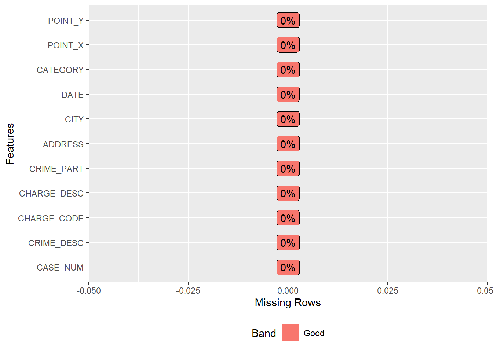
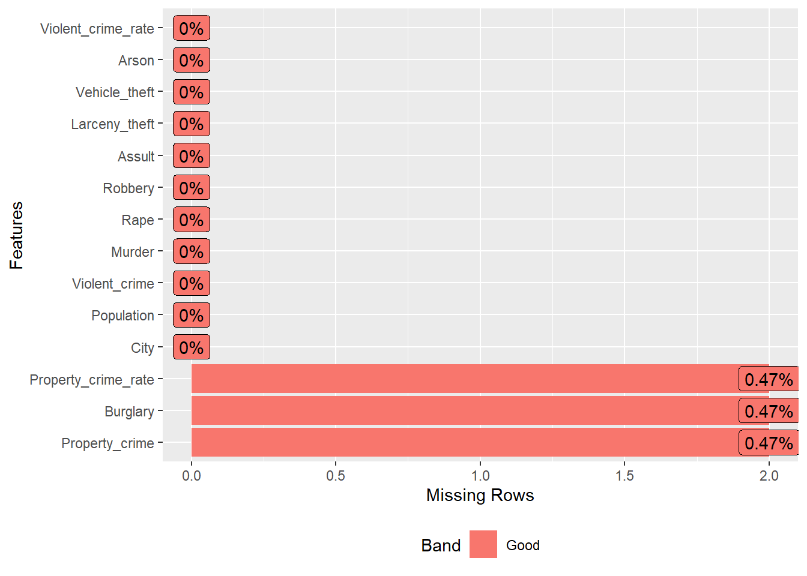
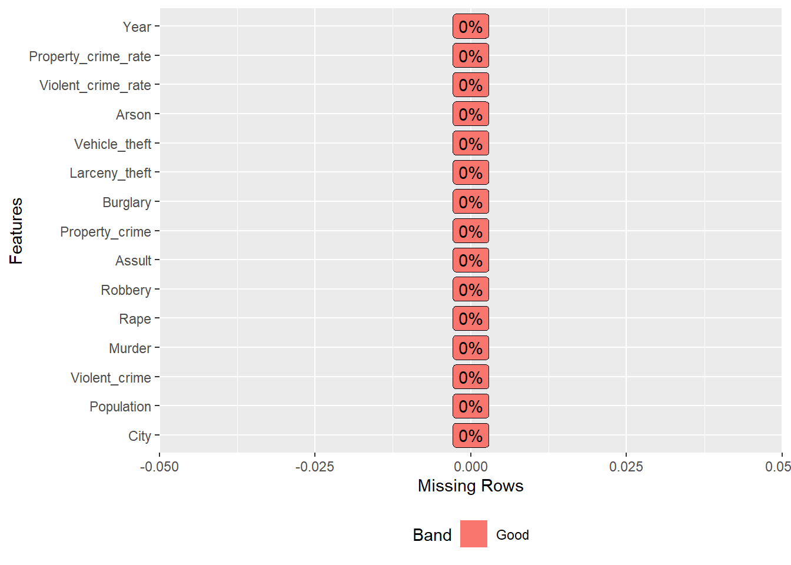
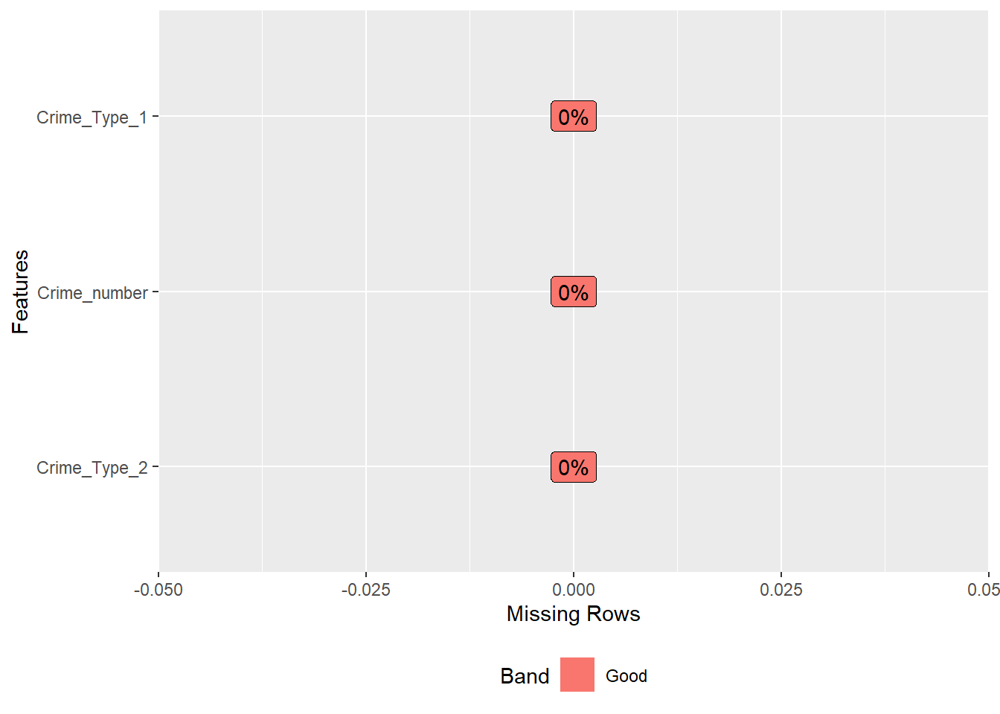

Chapter 3 Data
3.1 Sources
3.1.1 Data from Ann Arbor Police department
The City of Ann Arbor maintains a data catalog on its website that includes police department incident reports. These reports are available in various formats, including CSV, PDF, DOC, RSS, KML, and SHP. For the purpose of this analysis, we will use the CSV format, which is compatible with spreadsheet, database, and statistical software. The dataset includes about 5400 observations with variables case number, crime type, incident address, date, etc. The data catalog is regularly updated, although the specific update frequency is not specified. The most recent update was made on 10/31/2022. Researchers with questions about the data can contact the police department using the contact information provided in the ‘Agency/Unit’ column of the table. Some known issues with the data quality exist due to security concerns. For example, datasets that identify critical infrastructure assets will not be published, and crime statistics will be aggregated to a city-block level. Additionally, some personally identifiable information and sensitive data, such as residents’ personal information, will be removed.
3.1.2 Data from FBI UCR Program
The datasets are collected by FBI through UCR Program, each provides the number of violent crime (murder and nonnegligent manslaughter, rape, robbery, and aggravated assault) and property crime (burglary, larceny-theft, and motor vehicle theft) as reported by city and town law enforcement agencies that contributed data to the UCR Program in cities of Michigan for each year. One problem of the data sets is that the columns are not independent to each other: the value of column Violent Crime is the sum of the values of the subsequent 4 columns and the value of column Property Crime is the sum of the subsequent 3 columns. What’s more, Arson is an independent crime type in the table, not included in violent crime or property crime. Another problem is that the data is updated only to 2019.
3.2 Cleaning / transformation
3.2.1 Data from Ann Arbor Police department
- Cleveland plot: Numbers of cases under different categories
As we can see from the overview of the dataset, the crimes are divided into different categories, where each category is followed by a description for the sub-category. Since we aim to see the counts of the events for each category in total, we need to preprocess the data by transforming the column CATEGORY to a uniform form.
To do this, we split strings in the CATEGORY column of a crime data frame by either ” - ” or ” / “, depending on which delimiter is present. If either delimiter is found, the code replaces the original string with the first element from the resulting split.
- Time Series plot
Column DATE provides us both the date and time for the crime incidents, while we only need the date for our monthly time series plot. Thus we will remove the extra information and extract the dates and months by splitting the string. First, the code uses a for loop to iterate over the DATE column in the crime data frame. For each value in the DATE column, the code uses the str_split() function to split the value by the space character (’ ‘). This results in a list of two elements: the date and the time. The code then assigns the first element (the date) to the corresponding position in the date column. Next, the code uses a second for loop to iterate over the DATE column again. For each value in the DATE column, the code uses the str_split() function to split the value by the dash character (’-’). This results in a list of three elements: the year, the month, and the day. The code then assigns the second element (the month) to the corresponding position in the month column.
When working on the time series plot for the number of cases during each day, I transformed the “DATE” column in the following ways: I first loop through each row, split the string by ” “, and retain the first element as”date”. I stored them in a new column named “date”. To find the number of cases during each month, I looped through each row in the “date” column, split the string by “-”, and retained the first element as “month”. I stored them in a new column named “month”.
When working on the time series plot for the number of cases during each hour, I transformed the “DATE” column in the following ways: I first looped through each row, split the string by ” “, and retained the second element as”time”. I then split the data by “:” and retained the second element as “hour”.
- Heatmaps
The available data is the latitudes and longitudes of crimes. To get a better sense of the number of cases occurred in each area, I first split the longitude ranges and latitude ranges into 5 segments for each. Then, I loop through the entire dataset and counted the number of crimes that occurred within each of the 25 areas based on the longitude ranges and latitude ranges.
3.2.2 Data from FBI UCR Program
Each data set contains the numbers of different types of crimes in cities of Michigan for each year. I construct two dataframes for usage.
The columns for the 10 files are all in the character form, so for the very first step, I transfered all columns to the nemeric form.
For the first data frame, I first computed the crime rates(Crime number / Population) for two summarized type of crimes - violent crime and property crime and added the values to two new columns. Then I chose 20 rows with highest population for comparison.
For the second data frame, I selected the data of Ann Arbor for each year from the 10 files, then I changed the column names to the same one, added a new column showing the year of data to each file, and combined them all together.
The third data frame is tidydata. I used the data of 2019 from the first data frame constructed as explained above, and transformed it to tidydata version.
3.3 Missing value analysis

The dataset PartABCrimeOffenses(from Ann Arbor police department) has no extra title name which might occupy the columns or rows, and the data for all columns, includinhg CASE_NUM, CRIME_DESC, CHARGE_CODE, CHARGE_DESC, CRIME_PART, ADDRESS, CITY, DATE, CATEGORY, POINT_X, POINt_Y, are all filled. Thus the dataset is complete with no missing values, and there is no need for removing missing data.
For the dataset from FBI URB Program, there are 0.47% missing values for Variable Burglary in the data “df2019.csv”, but since we only use the data of 20 cities with highest population of the data set, it is totally acceptable and thus we do not have to solve the missing data problem.